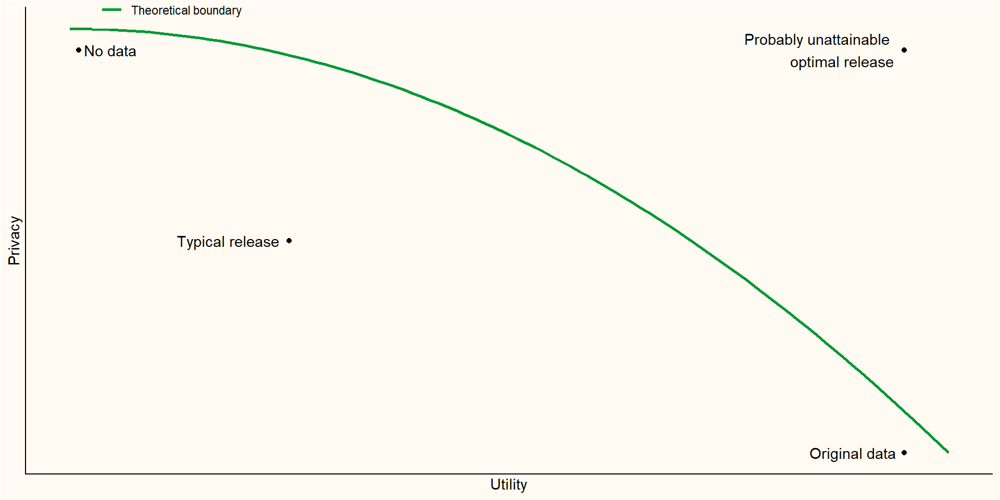
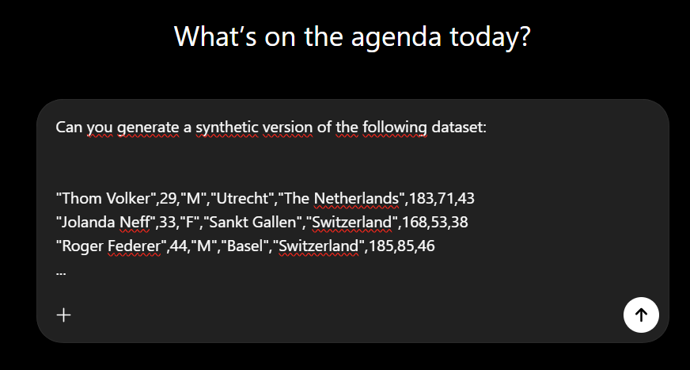
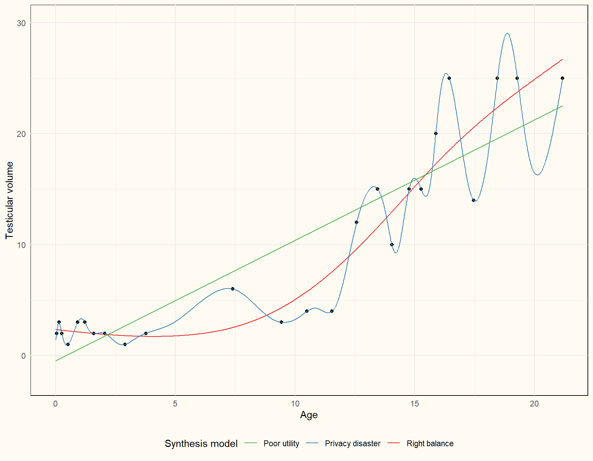
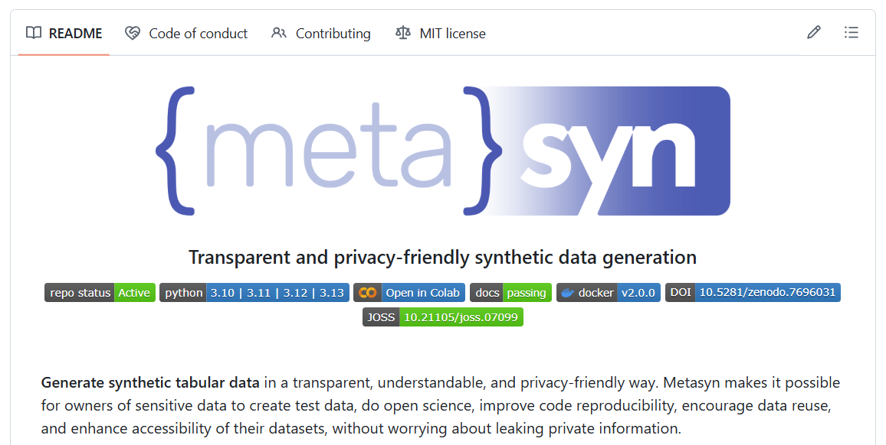
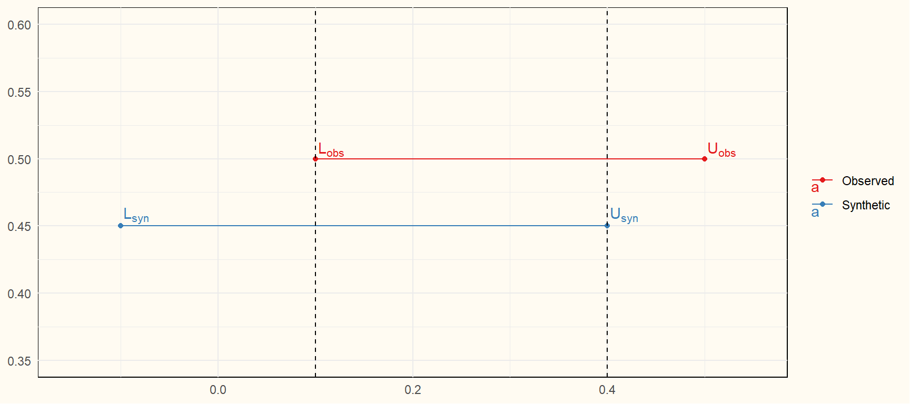

Enhancing open and reproducible social science while protecting participants’ privacy
But when the data is sensitive, openly disseminating research data is not possible.
Data is simply not available, bye!
“Data is available upon reasonable request.”
Data is on a secure server with data access procedures.
Solution: synthetic data
Thom Benjamin Volker
Research interests: methods to enhance data privacy, synthetic data and multiple imputation of missing data.
Thorben van Meij-Kolm
Research interests: forecasting, A/B testing.
Synthetic data is data that is generated from a statistical model, as opposed to real, collected data
Fake data, generated data, digital twins
Capture the most important information about the data in a model
Generate new samples from this model
What information flows into the model can be bounded
Modelled relationships that appear in the real data are preserved

If done well, anonymization might suffice.
But: data might be linked in suprising ways.
With enough variables, every record becomes unique.
Narayanan & Shmatikov (2008) identified 99% of the records in the (anonymized!) Netflix Prize Data based on some crude information
Privacy can be well protected
No real records anymore
Information that goes into synthesis model can be bounded
A large amount of information can be preserved
Quality of synthetic data depends entirely on synthesis model
Too simple models might omit important relationships
Complex synthesis models obscure what information is reproduced in the synthetic data
Privacy risk assessment
What’s the goal of the synthetic data?
Choosing the synthetic data model
Evaluating risk and utility
Refinements necessary?
Anonymization: remove directly identifying information.
Names, ID numbers, addresses, user ID’s
Often unique and hard to synthesize
Evaluate outliers: might be directly identifying
Identify sensitive variables: consider recoding and coarsening
Dummy data?
Teaching?
Replication?
Novel research?
Is the real data eventually available in a secure environment?
You need a generative model
\[ f(D_{syn}|\theta) \]
You require an (implicit or explicit) model \(f\) for the data \(D\) with parameters \(\theta\)
Parameters are typically learned from real data; as opposed to simulated data.

What information do you want to preserve?

Synthesize univariately
Easy to bound information that goes into synthesis model
Limited fidelity, but can be highly useful still!
E.g., getting familiar with the data, code checking, model building, script writing (code to data procedures)

metasynFit a set of parametric distributions to the observed data
Select best fitting model based on information criterion
Sample new data from this model
Additional implementations for strings (names, addresses) and dates
Additional plugins for enhanced privacy settings
Conditional modelling versus joint modelling
Parametric versus non-parametric learning
Fully versus partially synthetic data
Traditionally: restricting to simpler models
For non-parametric models:
Regularization
Differential privacy
Only formal privacy framework as of yet
Bounds the maximum influence a single individual can have on a model
Adds noise such that the results are almost equivalent regardless of whether this maximally influential individual was present in the data
Often performs poorly for conservative values of the privacy parameter
Often based on deep-learning or copulas
Superior for structured data (images, geo-spatial data, fMRI)
Hard to know and communicate what information ends up in the synthetic data
Software: Synthetic Data Vault (sdv), synthcity (python); RGAN
Building one model per variable is often easier (conceptually) and provides a lot of flexibility
Model checking (posterior predictive checks)
Easier to make refinements
More obvious what information ends up in synthetic data
Software: synthpop (R, python still in development)
Identity disclosure: can we infer whether a particular individual was part of a data
Attribute disclosure: characteristics about individuals can be learned with near certainty
Fit for purpose
Similar variable types, no impossible values, similar scales
Evaluate by inspecting the data and making visualizations
Analysis specific utility: Compare estimates of observed and synthetic data analysis; confidence interval overlap

Global utility:
Density ratio (with densityratio R-package): \(p_{obs}(\mathbf{x})\)/\(p_{syn}(\mathbf{x})\)
Classifier-based testing: can we predict which values are real and which are synthetic?
Put privacy over utility!
Make clear the data is synthetic: filename, title, description, variable names?
Be as explicit as possible about how the data is generated and what can and cannot be done with it.
Feel free to reach out: t.b.volker@uu.nl